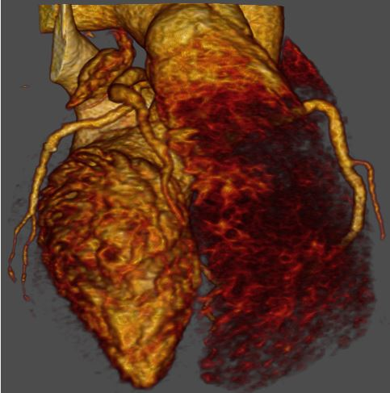
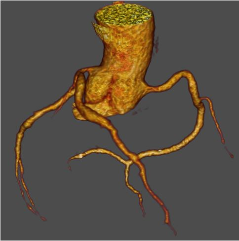
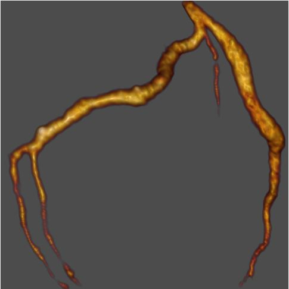
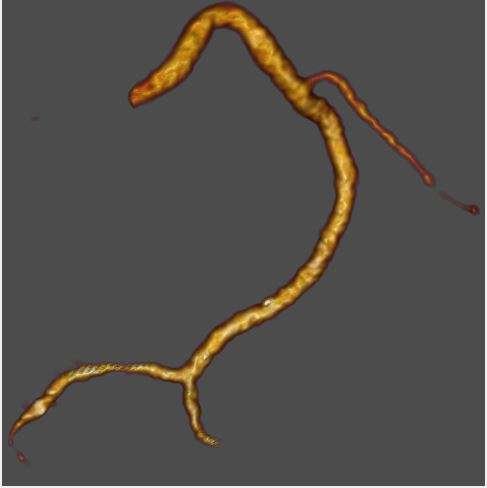
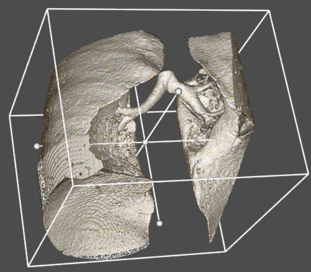

MedImage
Компьютерная Обработка Медицинских Изображений
Продукты
Программные Средства Постобработки Изображений
Средства Сегментации
Средства Алгоритмической Поддержки
Контакты
ДОСТУПНА ПОЛНОСТЬЮ АВТОМАТИЗИРОВАННАЯ ПРОГРАММА СЕГМЕНТАЦИИ СЛЕДУЮЩИХ СТРУКТУР ТРЁХМЕРНЫХ ДАННЫХ КТ КОРОНАРОГРАФИИ
(для обработки сложных случаев можно воспользоваться полуавтоматической программой сегментации)
Область Сердца
Восходящая Аорта
Левая Коронарная Артерия
Правая Коронарная Артерия
Лёгкие




